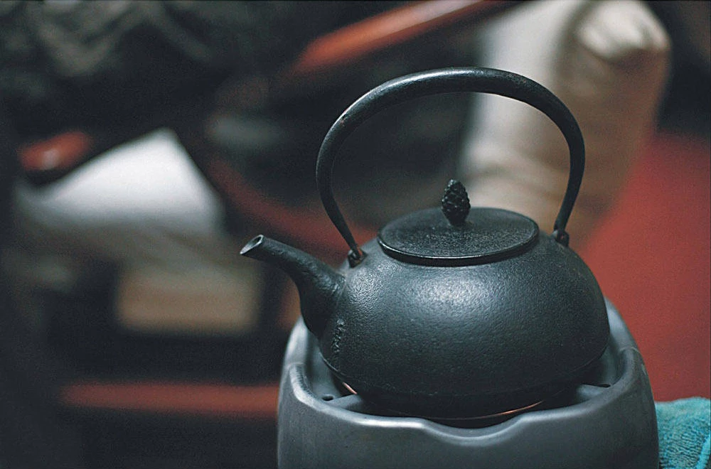

喝茶的好处
饮茶不但是传统饮食文化，同时，由于茶中含有多种抗氧化物质与抗氧化营养素，对于消除自由基有一定的效果。因此喝茶也有助防老，具养生保健功能，每天喝三两杯茶可起到防老的作用。茶叶中含有多种维生素和氨基酸，喝茶对于清油解腻，增强神经兴奋以及消食利尿也具有一定的作用。 但并不是喝得越多越好，也不是所有的人都适合喝茶。一般来说，每天1-2次，每次3-5克、400毫升的饮量是比较适当的。一般，人们说喝茶还指喝水。

茶园规划
明万历二十三年（1595）张源撰写的《茶录》中，对当时洞庭东西山绿茶（炒青）的采摘、炒制有较为详细的记载，其炒制过程分杀青、轻团、焙干等工序，已与当今洞庭碧螺春的炒制工艺基本一致。

茶叶品质鉴别
明万历二十三年（1595）张源撰写的《茶录》中，对当时洞庭东西山绿茶（炒青）的采摘、炒制有较为详细的记载，其炒制过程分杀青、轻团、焙干等工序，已与当今洞庭碧螺春的炒制工艺基本一致。

冲泡工艺
明万历二十三年（1595）张源撰写的《茶录》中，对当时洞庭东西山绿茶（炒青）的采摘、炒制有较为详细的记载，其炒制过程分杀青、轻团、焙干等工序，已与当今洞庭碧螺春的炒制工艺基本一致。